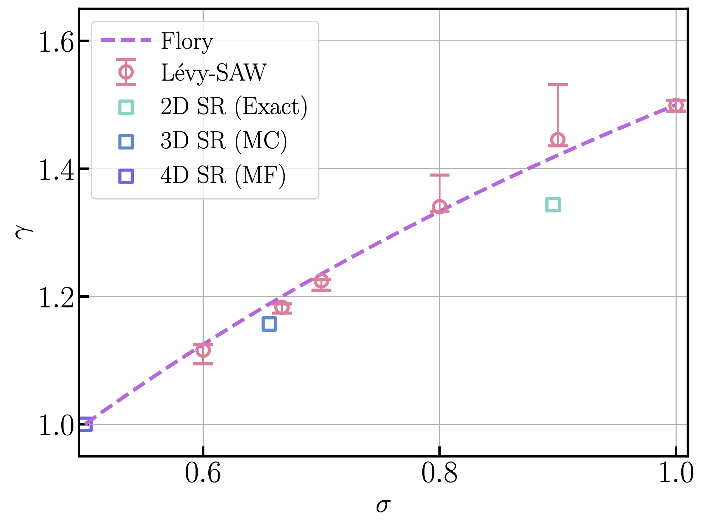
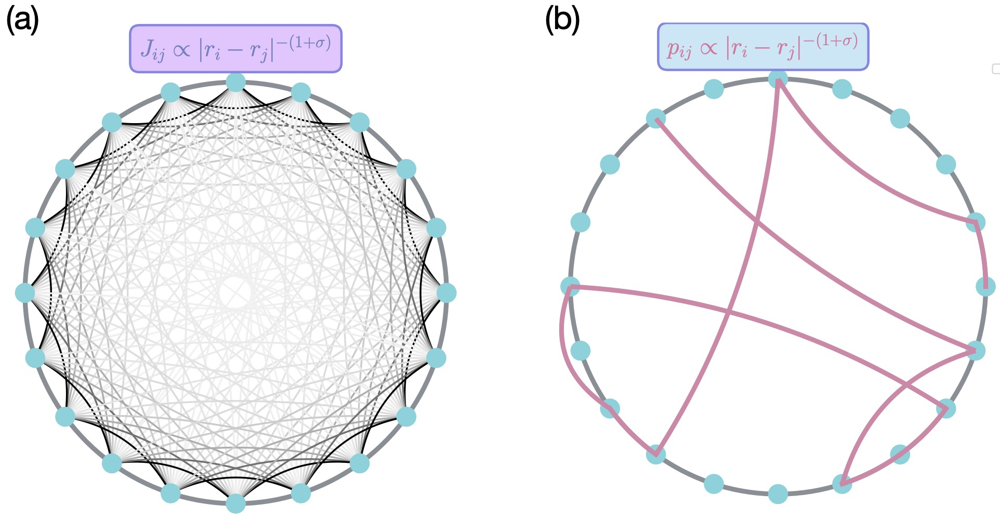
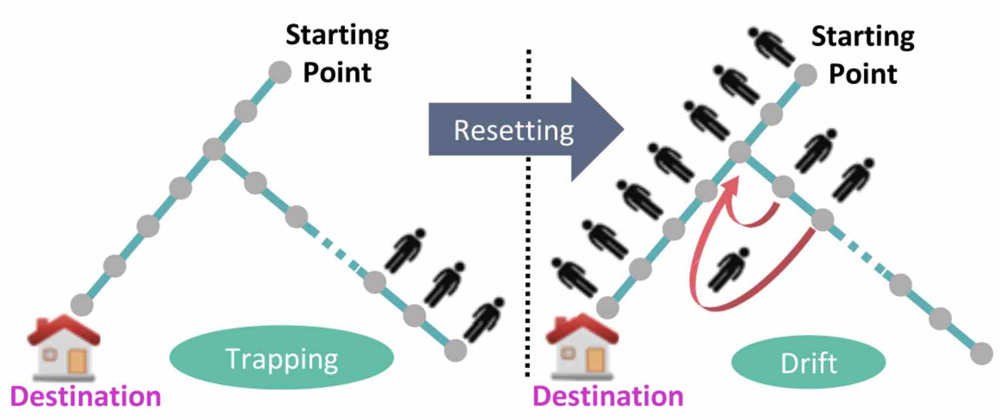
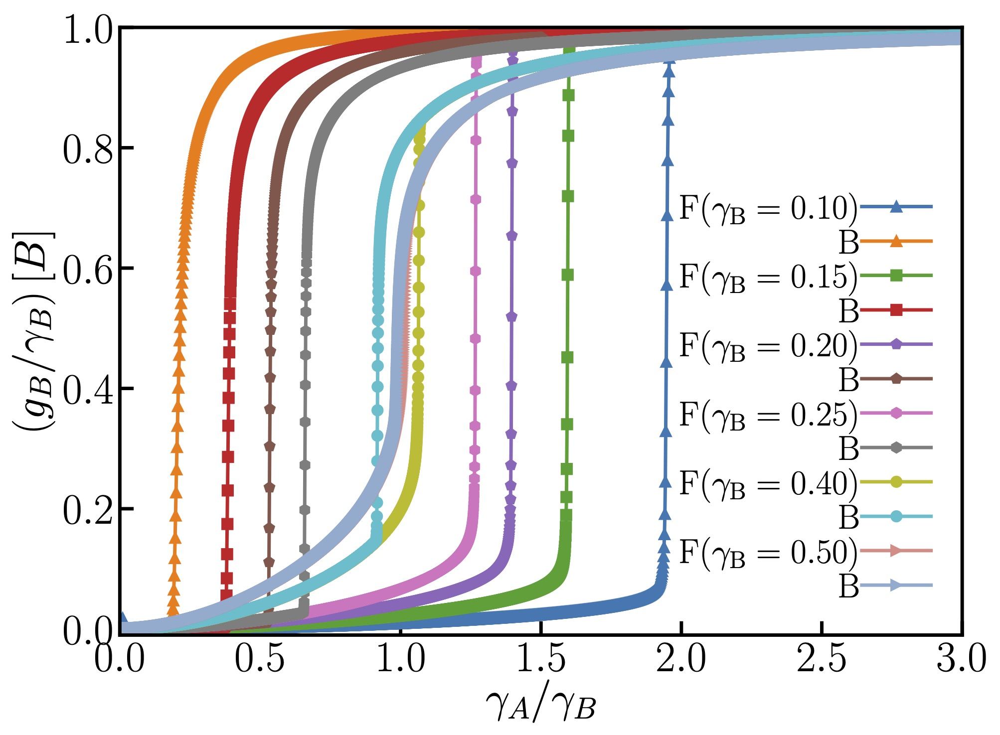

Research
My research interests lie in the fields of statistical physics, nonlinear dynamics, and quantum dynamics.
To be specific, these include the following:
- Synchronization in many-body interacting systems
- Random walks and stochastic resetting
- Universality of phase transitions and critical phenomena
- Critical dynamics on long-range disordered systems
- Quantum dynamics on disordered media
Beyond my primary work, I collaborate widely with both theorists and experimentalists, often developing theoretical frameworks
to understand physical phenomena (please see here - here). This includes providing theoretical
support to experimental realization of synchronizations, applying statistical
physics approach to biophysics, in particular to understand Gene Regulatory Networks and developing a computational framework
to explain the behavior of the organism Physurum polycephalum in solving complex computational problems.
Long-range interactions, disorder and the universality

Systems with long-range interactions, characterized by power-law decaying couplings with distance, have long
been a cornerstone in classical and quantum statistical and condensed matter physics. These systems exhibit a
variety of rich, nontrivial behavior both in and out of equilibrium otherwise absent in their short-range
counterparts. One notable example is that sufficiently slowly decaying interactions can alter the universal
critical properties and induce phase transition via spontaneous symmetry breaking in low-dimensional systems,
which is otherwise prohibited by the Mermin-Wagner theorem. The recent surge of interest in such systems
is driven by their experimental realizations in atomic, molecular, and optical platforms, along with
their potential applications in quantum computation.
Universality is a fundamental concept in the field of critical phenomena in statistical physics. It describes
how diverse physical systems exhibit the same scaling behavior near criticality, regardless of their microscopic details.
However, when Euclidean lattices with long-range interactions are generalized to long-range interacting graphs, they
lack translational invariance and the graph introduces intrinsic disorder. The effect of such quenched disorder
on the criticality is crucial and remains not fully understood.
In our recent work, we investigated the role of the spectral dimension ($d_s$) in determining universality classes of models such
as the XY and Kuramoto models on long-range disordered graphs. We observed strong finite-size fluctuations in systems with
$2 < d_s \leq 3$. Next, we study how this quenched graph disorder affects the critical exponents, focusing, in particular,
on a critical system: the Self-avoiding random walk (SAW), which realizes the $n \to 0$ limit of $\mathcal{O}(n)$ ($n$-vector) model.
We have developed an algorithm to generate a long-range infinite graph and also a modified SAW algorithm
to extract the exponents reliably. Their behavior across the long-range to short-range boundary is investigated
in detail and is compared with that of the ‘clean’ self-avoiding Levy flight on a weighted graph.
Publications:
Quantum dynamics: Anderson localization

Over six decades after Anderson's seminal work, Anderson localization remains a cornerstone in understanding disorder-induced quantum phenomena.
A striking development in recent years is its correspondence with many-body localization. Another unexpected result is the robust localization
of all bulk eigenstates in long-range interacting systems, such as dipolar models, even beyond the limits of conventional theoretical
methods. A graph-theoretic model serves as a valuable platform for probing the interplay between structure and disorder in quantum transport.
In particular, we investigate Anderson localization on a long-range disordered graph with tunable disorder via
long-range link sparsity, to understand if sparse long-range graphs and fully connected long-range Hamiltonians belong
to the same universality class of localization transitions.
Synchronization

The phenomenon of spontaneous collective synchronization in a complex dynamical system comprising many interacting degrees of
freedom is one of the most fascinating emergent behaviors observed in nature. It is ubiquitous across a wide range of scales,
from atoms to celestial objects. The Kuramoto model serves as a paradigm for studying such phenomena. In general, it belongs
to a generic class of nonequilibrium or driven systems that violate the principle of detailed balance, leading to nonzero loops
of probability current in configuration space. Unlike equilibrium ones, there is no general framework to study
nonequilibrium systems. Understanding the properties of nonequilibrium stationary states, as well as their equilibrium
counterparts, was one of the primary goals of my doctoral research. During this time, I extensively investigated the effects of
nearest-neighbor interactions (local coupling) and stochasticity on synchronization in the Kuramoto model and its relaxation
dynamics, employing various analytical and computational techniques from statistical physics.
Our recent focus has been on controlling and manipulating such systems. Synchronization is crucial for proper functionality,
survival, and adaptation across various length and time scales in natural and engineered systems. Attaining synchronization
often comes with unavoidable energy costs under limited resources. For example, in the Kai system underlying the cyanobacterial
circadian clock, energy dissipation drives coupling between oscillators, with synchronization emerging beyond a critical
dissipation threshold. Motivated by such examples, we recently introduced a novel protocol of shuffling of oscillator frequencies,
which we show to be inducing synchrony even in static networks under otherwise unfavorable conditions. This mechanism has
also been experimentally realized.
Publications:
Random walks and stochastic resetting

Sometimes, it's best to simply give up and start afresh! Repeated interruption and resetting of a dynamics to a particular
condition can alter significantly the resulting properties, both static and dynamic, yielding non-trivial nonequilibrium
stationary states and enhancing efficiencies in search processes. Over the past decade, stochastic resetting has emerged as
a powerful mechanism to control and optimize dynamical processes in nonequilibrium set-ups. While most studies focus on non-interacting
stochastic systems, our work is among the first to apply resetting to many-body interacting and deterministic dynamical systems.
Specifically, within the ambit of the Kuramoto model, we demonstrate that an introduction of resetting leads to
the emergence of a synchronized phase, even in parameter regimes where the bare model does not support synchronization.
Recently, we have extended this approach to include Gaussian white noise and developed an approximate framework
for nonequilibrium steady states.
Random walks on disordered graphs serve as useful models for transport in physical systems. One such graph realizes a random comb,
which consists of a one-dimensional backbone lattice, from each site of which emanates a branch of random length. The randomness in branch
lengths introduces quenched disorder into the dynamics. The random comb provides a simple yet nontrivial playground that captures essential
features of many spatially disordered systems, including finitely ramified fractals and percolation clusters.
We study the effect of quenched disorder on transport properties and provide exact results for non-interacting biased random walkers in
the presence of stochastic resetting. The interplay between quenched disorder and the external field in the dynamics leads to various
nontrivial phenomena, such as a drift velocity that varies non-monotonically with the applied field due to the trapping of particles
in the branches. We show how resetting helps mitigate branch trapping. We further extend the study by incorporating particle interactions
and obtain exact results for transport properties in the case of the asymmetric simple exclusion process (ASEP).
Publications:
Stochasticity in Gene Regulatory Networks

Gene Regulatory Networks (GRNs), laying out the blueprint for gene expression, govern the identity, functions,
and behavior of a biological cell. These networks consist of interconnected genes and their products, including
transcription factors (TFs), RNA molecules, and proteins, which regulate each other
through molecular interactions. GRNs are responsible for key biological processes like
cell differentiation, development, and tissue homeostasis to stress responses, metabolic regulation, and disease progression.
Nonlinearities and inherent stochasticities plays a crucial role in shaping gene expression dynamics. These factors lead to variability
in gene activity, resulting in diverse cellular phenotypes. Our research explores the role of stochastic fluctuations in GRNs,
focusing on how they contribute to phenotypic diversity, guide cell fate decisions, and enable populations to adapt
to environmental stresses or changes, and help synthetic biology applications. Additionally, we explore how these insights
can aid in synthetic biology applications.
Publications: (Manuscript in preparation)
Solving combinatorial optimization problem by unicellular amoeboid organism
Rapidly and accurately selecting optimal moves is a vital skill for organisms,
akin to tackling a complex computational problem. Physurum polycephalum solves the
traveling salesman problem (TSP) by reshaping to avoid light stimuli, with solution time scaling
linearly with problem size. We focus on developing a computational framework borrowing concepts from
nonlinear dynamics and statistical physics to replicate and explain this behavior.
Fluctuation-dissipation relation in coupled oscillator systems
The fluctuation-dissipation relation, a fundamental concept in equilibrium statistical physics,
relates intrinsic fluctuations in a system at equilibrium with its linear response to external perturbations.
In our study, we explore this relation in a non-equilibrium setting, specifically within a system of coupled phase oscillators.
We introduce both microscopic and macroscopic correlation functions to characterize the fluctuations in this
noisy coupled oscillator system. We recently derive the relations between these correlation functions and the system's
response to an external force and gain insights into the dynamical behavior of the system.